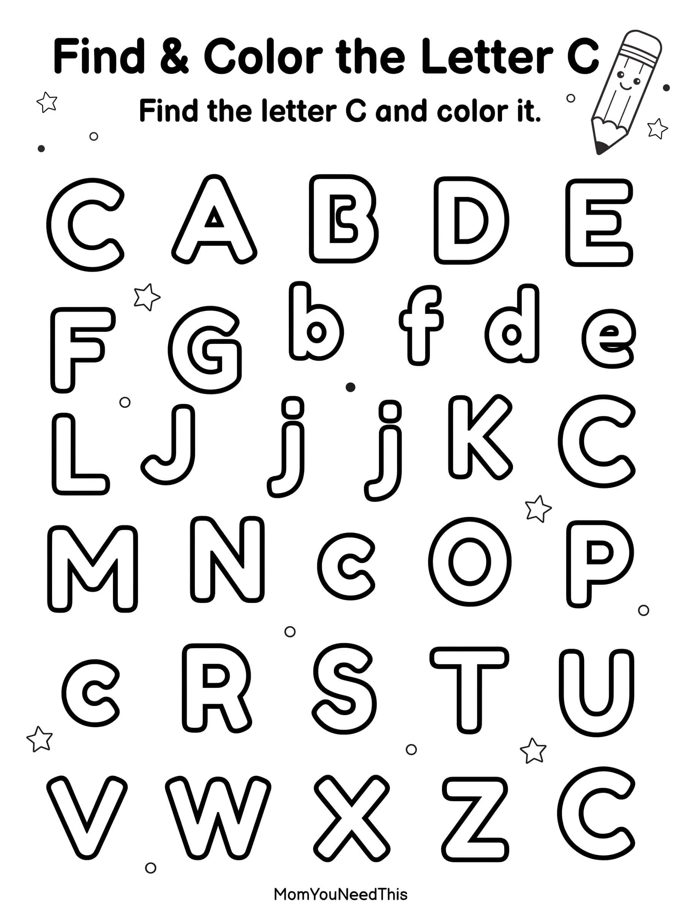

Find & Color Letter C Worksheet
Help your child practice recognizing the letter C with this fun printable letter c worksheet — a Find & Color activity. Children search a page of mixed letters for every uppercase and lowercase C, then color each one they find — building alphabet recognition, focus, and early literacy skills. C is the friendliest letter to hunt: one open curve, the same in both cases.
Quick Answer
This free letter c worksheet turns letter practice into a hunt: children scan a page of mixed letters, spot every uppercase and lowercase C, and color each one they find. It builds letter C recognition, visual scanning and focus, and it is made for toddlers and preschoolers. Download the PDF and print at home — free, no signup.
At a Glance
- Ages: Toddlers and preschoolers
- Activity: Searching a page of mixed letters to find and color every letter C
- Skills: Letter C recognition and visual scanning
- Format: Printable activity page (PDF)
- Cost: Free, no signup
Letter C Find & Color Activity

🎨 Download Your Free Letter C Find & Color Activity
Find every uppercase and lowercase C hidden among the other letters, then color each C you find. Big or small, the shape never changes — one curve, open on the right. The gap is the giveaway: if the curve closes all the way around, it is an o, not a c.
⬇️ Download Worksheet 🖨️ Print(opens in new tab)🎁 Free printable for toddlers & preschoolers
What Children Practice
⭐ Explore More Find & Color Letters
Continue practicing alphabet recognition with more Find & Color worksheets, matching activities, tracing pages, and alphabet coloring pages.
🔍 More Find & Color LettersMore Free Learning Resources
Discover printable alphabet activities, preschool worksheets, coloring pages, tracing pages, math activities, and more free educational resources.
🎁 View All Free Resources🔍 Hunting The Letter C: What To Watch For
C is the honest letter: what you see is all there is. One curve, open on the right, identical in uppercase and lowercase — the only difference is size. That makes this hunt the purest of the three: no shape-shifting, no mirror twins, just a single question asked over and over: is the gap there?
The distractors earn their keep. O is C with the gap closed. G is C with a little shelf added. E and the small a are round in the same neighbourhood. Each rejection teaches the same lesson — a letter is defined by one or two exact features, and close is not the same.
After the hunt, count the finds together and celebrate the o's that were correctly left uncolored — spotting the closed circle and passing it by is the exact skill this page exists to build.
C Words to Say While You Hunt
The game on this page is find, colour, SAY — and strangely, this page never names a single C word. Here is the say-together set, every one starting with the hard "kuh" sound the page teaches:
- Cat — kuh-at. The one that says meow.
- Cake — kuh-ake. Candles optional.
- Cow — kuh-ow. The one that says moo.
- Car — kuh-ar. The one that says vroom.
- Cookie — kuh-ookie. Two kuh sounds: one at the start, one hiding in the middle.
- Cup — kuh-up. The one juice goes in.
Say one together every time a C gets coloured — by the last row, the letter and its sound arrive as a pair.
🖨️ How to Use This Printable
Get started in minutes — everything here is free and made for busy parents.
- Download the printable. Tap the download button to save the free Find & Color Letter C file to your device.
- Print it out. Use any home printer and regular paper — cardstock works great for pages little hands will use again and again.
- Learn together. Sit with your child, follow the activity, and keep it playful. Short sessions work best.
- Explore more. Check the free printables linked below for your next activity.
❓ Find & Color Letter C FAQs
Is this Find & Color Letter C printable free?
Yes — every printable on MomYouNeedThis is 100% free to download and print. No signup, no payment, just tap the download button and print the letter C hunt as often as your child wants another round. It pairs well with other letter c activities for preschoolers — the coloring page and sound practice linked below.
How do I use this letter c worksheet?
Print the page and hunt together: say the letter C's name and its coughing sound, check each round candidate for the open gap, and color every C that turns up. Short, playful sessions work better than long lessons for little learners.
What literacy skills does this practice?
Letter recognition and visual discrimination above all. C's hunt isolates one judgement — open curve or closed circle? — and repeating it builds the habit of checking a letter's defining feature instead of its general look, a habit that transfers to every other letter.
Why does C sometimes sound like S?
C has two sounds, and the letter after it decides. Before a, o or u, C says its hard sound, "kuh" — cat, cow, cup, the sound this page teaches. Before e, i or y, C goes soft and says "sss" — city, circle, cent. Your child only needs the hard sound for this hunt; the soft one is worth knowing about the first time a storybook word refuses to say "kuh".
🔗 More Free Printables You’ll Love
Pair this printable with more free learning activities from the MomYouNeedThis library.
- 🔍 Free Find & Color Letter AFree printable find and color letter a activity for little learners.
- 🔍 Free Find & Color Letter BFree printable find and color letter b activity for little learners.
- 🔊 Free Letter C Sound PracticeFree printable letter c sound practice for little learners.
- 🎨 Free Letter C Coloring PageFree printable letter c coloring pages for little learners.